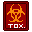

Nanotrasen

|
Outdated information
This section contains out-of-date information that may no longer be relevant. Please consider revising it to keep this information up to date. |

|
Work-In-Progress
Additional Information: "This page was ripped from an old document and is a (not-really) living page. Everything should be taken with a grain (5 ounces) of salt. Also, Nanotrasen is about to be re-named so please brace for such event." |
Known Corporate Relations
This is a brief listing of Nanotrasen's current relationships with other companies. These companies are NOT subsidiaries of NT, merely external entities that NT contracts or works with closely and frequently.
Vigilitas Interstellar
- Main Article: Vigilitas Interstellar
Nanotrasen's go-to security (and related matters) contractor, staffing practically all Nanotrasen ships and installations with security forces.
N+S
- Main Article: N+S
As far as Nanotrasen is concerned, N+S is to logistics as Vigilitas is to security. Cargo, mineral extraction, commerce and more is all contracted out to N+S, keeping Nanotrasen outposts and expeditions supplied and running smoothly.
Sharplite Defense
A defense contractor with a heavy focus on laser technology. One of the first early adopters of Nanotrasen’s standard parts system, their work can be found in service as early as the ABCD modular stations model. The fact that even those old guns still fire is a testament to their manufacturing prowess.
Nanotrasen Spaceworks
- Main Article: Nanotrasen Spaceworks
NT Spaceworks is the ship building arm of the Nanotrasen. They are responsible for the design and manufacture of many of the ships that roam the frontier.
|  | Dubious Canon Ahead
Warning: All lore beyond this point contains information that may or may not actually be canon. It's best not to reference this if at all possible, and double check with #loredev in the discord to double check information that you do need to know. You've been warned!! |
The Company Itself
Founded as a joint Bezuts-Sol venture a short time after first contact, Nanotrasen as we know it today began as a mere telecommunications provider. They stayed mostly irrelevant until the invention (and subsequent patenting) of the “stock parts” system. Then followed the slow monopolization of most of the manufactured technological goods industry, becoming a veritable monolith of a conglomerate. Maintaining interspecies relations has always been a core value of the company.
Nanotrasen’s strategy is relatively simple. If the Syndicate focus is on quality, then the NT focus is on quantity. Convenience and speed of adoption are key to this plan: If all your neighbors are using the Nanotrasen system, why bother switching to the Syndicate version? This creates a compatibility lock where relying on Syndicate tech generally cuts you out of the overwhelming Nanotrasen ecosystem, helping to enforce Nanotransen’s monopoly around the universe. Though NT employees can come from anywhere, NT owns a handful of planets outright. These function as massive company towns for the creation and training of employees, as well as providing materials and arable land.
Company Organization
Nanotrasen is led by a board of near-feudalistic old-money shareholders, and is comprised of core Nanotrasen along with several other legally distinct but still integrated brands. Those brands maintain some small level of autonomy within the greater Nanotrasen ecosystem, and are as follows:
Robustmore Drinkfoods
An unholy merger of Robust Softdrinks and Getmore Chocoalate Corp forced into existence at the behest of shareholders and the rest of Nanotrasen’s corporate system. They stock vending machines and service departments the universe over. Absolutely bloodthirsty negotiators.
Whitt & Sudds Chemical Supply
A cleaning supplies producer. Though a chemical production powerhouse that supplies many of Nanotrasen’s chem dispensers, their loose grip on copyright has led to plenty of identical knockoffs, as well as landing them in hot water with the other subcorporations.
NewComm
A communications and media magnate. Responsible for the production of advertisements and propaganda, alongside a lot of goodbad television and radio drama. Revered and hated by long-range space haulers as the only reliable source of radio entertainment for light years.
DeForest Medical
Nanotrasen’s dedicated medical company. They work in tandem with Whitt & Co. to provide hyposprays, medikits, and most of the other specialized medical equipment on a Nanotrasen station. By far one of the oldest and wisest companies under the NT flag, though they lack corporate influence.
Public Relations
Despite being made up of several smaller companies, Nanotrasen maintains its relations and negotiates as a single entity most of the time. Neutral to SolGov and independent organizations, the only people Nanotrasen explicitly won’t sell things to are the Syndicate.
Playing a member of this faction
Nanotrasen is a diverse company. Goals and purposes alter between ships, though, as an employee of Nanotrasen, you should hold yourself to these standards.
- Nanotrasen is a for profit corporation. When you act on behalf of Nanotrasen, you should, ideally, benefit from it.
- Most space in the frontier was formerly owned by Nanotrasen. Now, in the period after the ICW has ended, Nanotrasen is fostering relations, reclaiming their former territory, and restoring their public image. It is in Nanotrasen's best interests to trade with and aid independents, for this very reason.
- As a large chunk of it's territory was in the frontier, Nanotrasen's most profitable ventures are, too. The still widely unknown nature of the frontier makes it a center for Nanotrasen's mining operations, research, and more clandestine activities. Most frontier vessels would be partaking in one such activity.
- If you stumble upon any of Nanotrasen's secrets hidden within the frontier, it is a loyal employee's duty to leave immediately and call a cleanup team, or launch a coverup operation of your own - maintaining Nanotrasen's public image is crucial.
As a Captain, your purpose on a vessel or station is to conduct research or extract resources to further Nanotrasen's goals, and represent Nanotrasen on the frontier. You are armed, on most vessels, but you are not combat personnel - your primary goal is to command and co-ordinate crew. As a Nanotrasen Employee, you should fulfill your role and listen to the orders of your Captain or Head of Staff.
Nanotrasen - A Brief History Pasted From The Lore document
- Founded 30yrs after first contact between Bezuts and Sol
- Aimed to take advantage of both markets at once by including members of both species
- Interspecies cooperation and more aptly utilization becomes a core tenet of the company
- Originally purely a private Telecommunications firm aimed at Bezuts-Sol intersolar communications
- Not that successful in this venture, but ended up generating a dedicated core of skilled and ambitious engineers/designers
- One of the aforementioned engineers (name unknown) experiments with the modular telecommunications parts NanoTrasen was designing, attempting to generalize it’s application
- Design proves successful, and is noticed by superiors
- Later becomes first iteration of the “stock parts” system
- Revolutionizes the industry, catapulting NT to the forefront of technological manufacturing as well as wealthy companies due to stock parts’ wide applications
- Begins to buy up companies to shore up the supply chain, beginning with Northwind Shipping to more easily distribute the parts without interruption or pesky contracts
- Soon after Whitt & Sudds as well as (MINERAL PROCESSING COMPANY NAME HERE) are bought up in order to ensure the production line works indefinitely